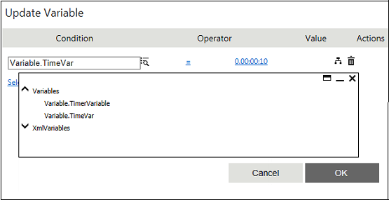

No
Activity description:
The Set Custom Timer Activity can be used to schedule the execution of multiple tasks at specified times, set using the corresponding workflow variable. This workflow variable with the format '^[CustomTimerSetActionName]ExecutionDetailsId', is to be defined in the Start activity for each Set Custom Timer activity used in the workflow. The scheduling can be made recurring or non-recurring. The output of the activity can be linked to the next activity.
Activity Properties:
The Set Custom Timer activity has to be configured by specifying appropriate values for the different properties in the Activity Properties area. The Activity Properties can be accessed by clicking on the Activity Properties tool in the tool bar or by selecting the appropriate option from the right-click menu for the Set Custom Timer activity. The Activity Properties are organized under the following groups of related properties. The properties under each group are described in this topic.
Name & Description
The properties in the Name & Description group have been described below. You can use these properties to specify the name and description for the activity.
Name - This property can be used to specify a name for the activity.
Property Type: Optional (This property needs to be set only if necessary.)
Description - This property specifies a brief description to be displayed for the activity.
Property Type: Optional (This property needs to be set only if necessary.)
Configuration
The properties in the Configuration group have been described below. You can use these properties to configure the functionality of the activity.
Schedule Time - The Schedule Time property allows the user to specify the time setting for scheduling the specific workflow action.
Property Type: Mandatory (This property must be set if the action is to be executed.)
Steps to set the Schedule Time property
See Set Custom Timer: Schedule Time for a detailed description of the Schedule Time property window.
Looping Behavior
The property in the Looping Behavior group has been described below. You can use this property to specify the looping behavior of the activity.
Loop through this action if output is - This property is used to specify the condition for looping the activity by selecting an activity output from the drop down.
Property Type: Optional (This property needs to be set only if necessary.)
Activity outputs:
The Set Custom Timer Activity returns the following values -
Paused: Displayed when the controlled activity is paused
Resumed: Displayed when the controlled activity is resumed
Stopped: Displayed when the controlled activity is stopped
In addition to these standard return values it also returns the scheduled time as output.
Example for a setting Custom Timer Activity:
Step 1: Design a workflow as shown below.
Step 2: Declare a variable of type String in the Start activity. For example, TimerVariable as shown in the below figure.
Step 3: This variable is updated using the engine activity "Update Variable ".
For example, Timer Variable = 0.00:00:10 means 10 seconds.

Step 4: On successful updating of the variable, set custom timer activity.
When there is a schedule time over the information is sent to the assigned actor.
Exception Behavior
Each activity has the Raise Error on Unhandled Linked Output property on click of which, it shows all the default configured mapped error outputs in red with their check boxes selected.
See Mapped Error Output for more details
Note: The Pause and Resume functionality of Workflow is not supported in this activity.